Web & Design
J’aime concevoir des interfaces modernes, claires et faciles à utiliser. Je travaille avec HTML, CSS, JavaScript, Figma et les principes de l’UX/UI pour transformer une idée en expérience concrète.
Recherche alternance / stage alterné, 2026/2027
Je suis encore en train d’apprendre et de construire mon parcours, mais j’aime déjà créer des projets digitaux qui ont du sens. À travers mes cours, mes projets étudiants et mes expériences, je découvre le web design, l’UX/UI et le marketing digital en essayant toujours de faire quelque chose de clair, propre et utile.
Projets & Expériences
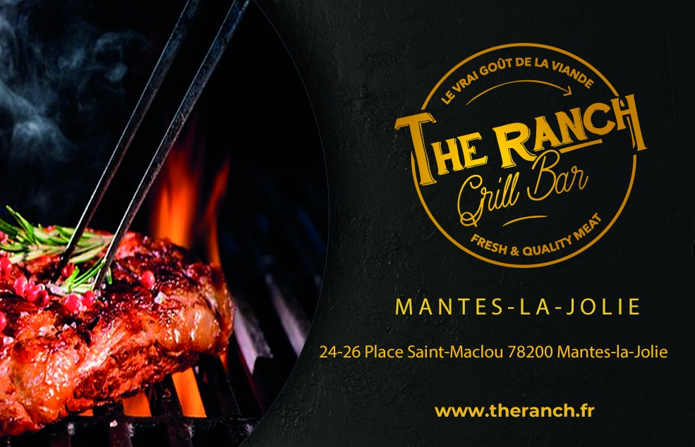
2025 Expérience professionnelleStage en marketing, communication et événementiel avec création de supports visuels et participation à l'organisation d'événements.
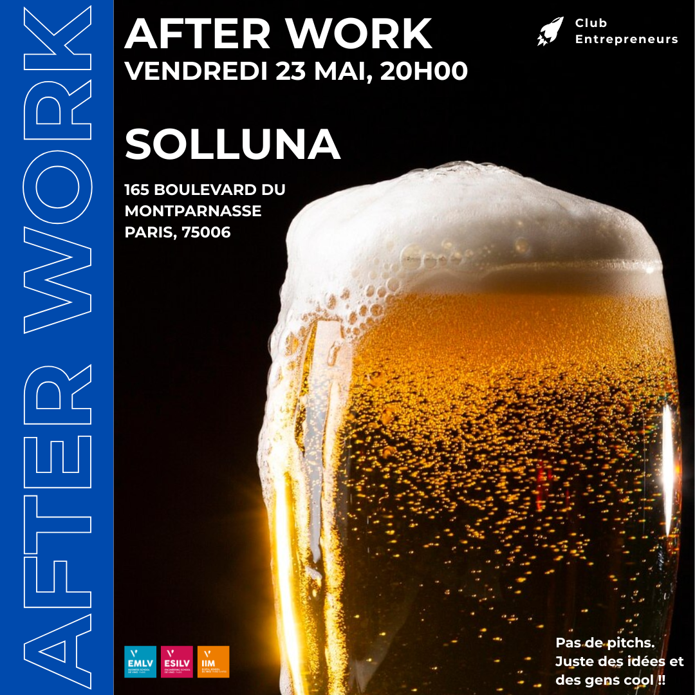
2025 Expérience associativeCréation de contenus et animation de la communication digitale du club.
Responsable communication de 03/2025 à 03/2026 : gestion des contenus digitaux et coordination avec l’équipe.
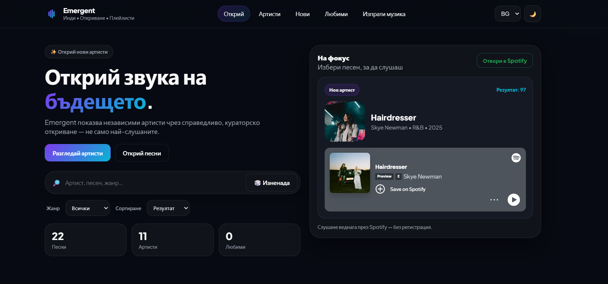
2026 Projet webProjet web réalisé pendant mon échange universitaire à Varna, en Bulgarie.
Plateforme de découverte musicale pour artistes émergents : recherche, fiches artistes et écoute Spotify intégrée.
2026 Projet académiqueAudit UX d'un parcours digital du groupe Accor : analyse des besoins utilisateurs et recommandations.
L’objectif : rendre le parcours plus clair, fluide et efficace. Réalisé au 1er semestre 2026.
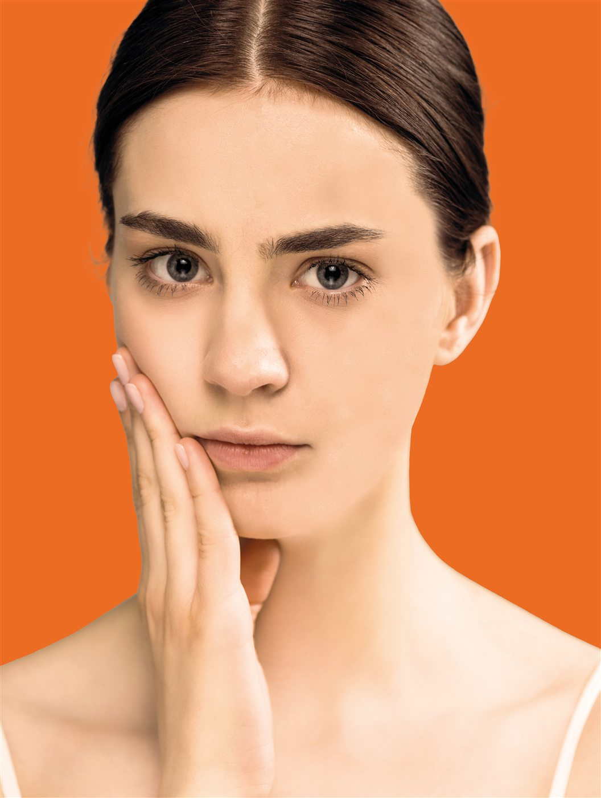
2024 Projet académiqueRetouche photo, compositions graphiques et créations Social Media réalisées avec Adobe Photoshop.
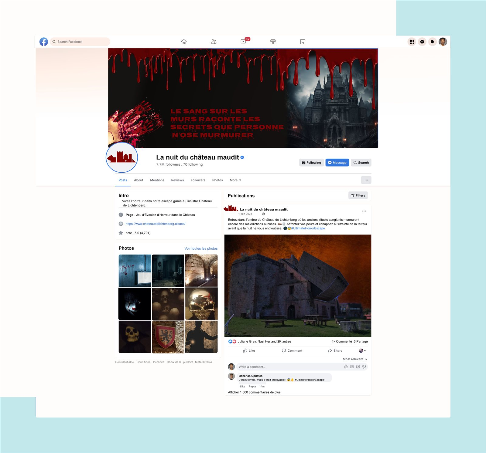
2024 Projet design & communicationCréation d'une identité digitale déclinée sur plusieurs plateformes : TikTok, Twitter/X, Facebook et YouTube.
Réalisation de mockups et supports de communication adaptés à l'univers de l'Escape Game.
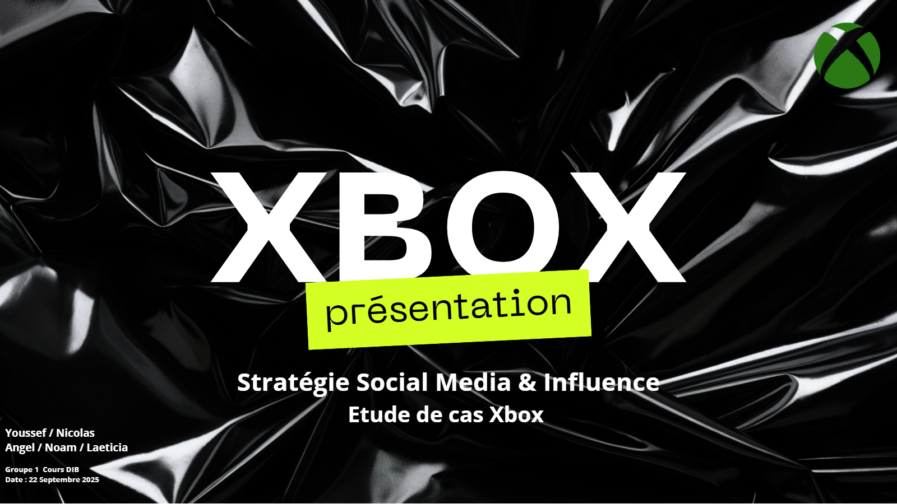
2025 Projet académiqueÉtude de cas : diagnostic de la présence digitale de Xbox et recommandations éditoriales par plateforme.
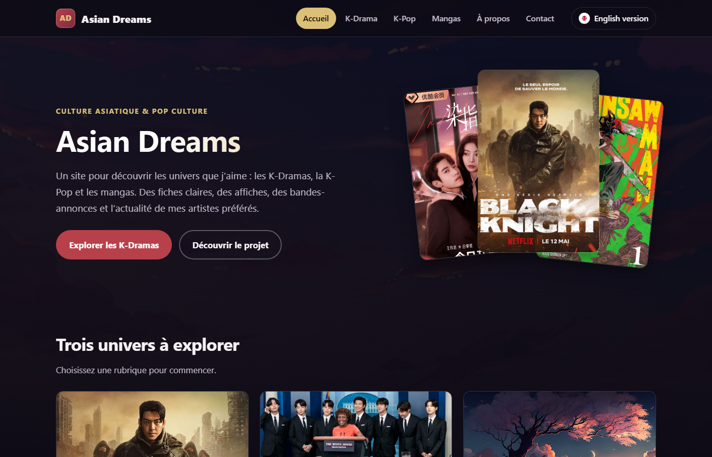
2024 Projet webSite bilingue FR/EN dédié à la pop culture asiatique : K-Drama, K-Pop et mangas.
Projet personnel, développé pour découvrir et exposer trois univers que j’apprécie.
Architecture back-end en PHP et Twig, plutôt qu’un site statique.
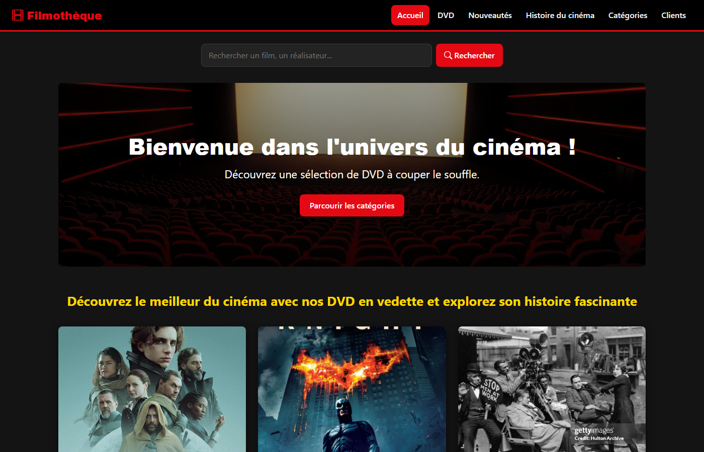
2024 Projet webCatalogue de films avec recherche, fiches détaillées et commentaires, connecté à une base MySQL.
Projet réalisé dans le cadre de la SAE 203 du BUT Métiers du Multimédia et de l’Internet.
Expériences
Responsable communication
09/2025 → 03/2026
Participation à la restructuration et au développement de la communication du club.
Membre actif
03/2025 → 08/2025
Implication dans les projets et la communication de l'association.
Membre
Depuis 10/2024
Participation aux activités, événements et projets du Club Entrepreneurs.
Stagiaire marketing numérique
05/2025 → 07/2025
Stage en marketing numérique, communication et événementiel avec création de supports visuels, étude de la concurrence et participation à différents projets de communication.
Compétences
Étudiant en Digital & International Business, je développe un profil polyvalent entre création, marketing, digital et gestion de projet.
J’aime concevoir des interfaces modernes, claires et faciles à utiliser. Je travaille avec HTML, CSS, JavaScript, Figma et les principes de l’UX/UI pour transformer une idée en expérience concrète.
J’aime créer des visuels et travailler l’identité graphique d’un projet. J’utilise Photoshop, Illustrator, InDesign et Canva pour réaliser des supports propres, cohérents et adaptés au message.
Je m’intéresse à la manière dont une marque peut communiquer et créer de l’engagement. Je travaille sur les réseaux sociaux, la création de contenu, le benchmark et la stratégie digitale.
Mes études m’ont permis de travailler sur l’analyse de marché, la stratégie et la gestion de projet. J’aime travailler en équipe et participer à un projet de l’idée jusqu’à sa réalisation.
À propos
Je m’appelle Angel Bel Hadj, je suis étudiant en Bachelor Digital & International Business à l’EMLV. Passionné par le digital, le web design, l’UX/UI et le marketing, j’aime créer des projets à la fois utiles, modernes et visuellement soignés.
Au fil de mes expériences académiques et professionnelles, j’ai développé des compétences en création visuelle, communication digitale, stratégie marketing, gestion de projet et développement web. Curieux, motivé et polyvalent, je cherche à continuer à progresser dans le domaine du digital tout en apportant des idées créatives et concrètes aux projets auxquels je participe.
Certifiant HubSpot (Inbound Marketing), Google (Digital Marketing) et IBM (AI Fundamentals).
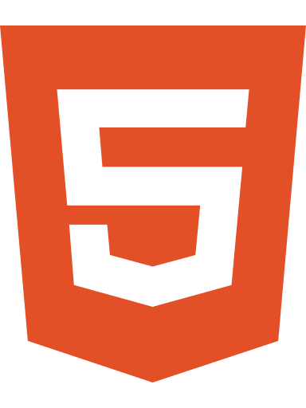
HTML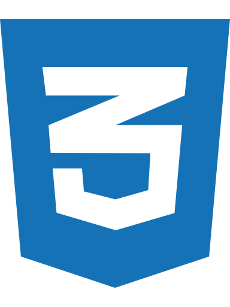
CSS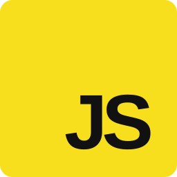
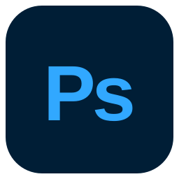
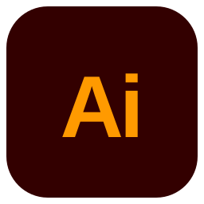
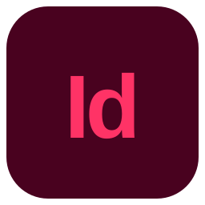
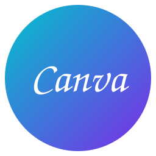
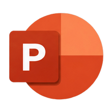
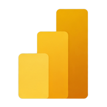
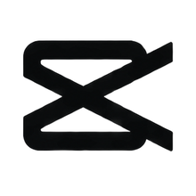
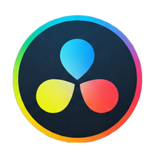
École de Management Léonard de Vinci, EMLV, 3e année
Digital & International Business
Formation
Un parcours construit entre digital, création, business et ouverture internationale.
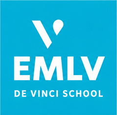
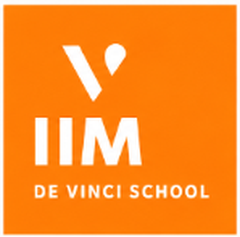
École de Management Léonard de Vinci, Paris La Défense
Bachelor Digital & International Business
Formation orientée digital, marketing, communication, business international et gestion de projet. Je développe progressivement un profil polyvalent entre créativité, stratégie et outils numériques.
En cours, 3e annéeVarna, Bulgarie
Échange universitaire international
Un semestre à l’international avec des cours et projets en anglais, autour de l’entrepreneuriat, du management, du marketing et du développement de projets digitaux.
Échange international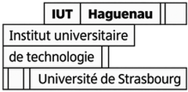
Université de Strasbourg
BUT Métiers du Multimédia et de l’Internet
Une formation qui m’a permis d’acquérir des bases en développement web, design graphique, communication digitale, audiovisuel et création de contenus.
Formation précédenteFreelance
Développement de sites web (UX/UI, HTML, CSS), conception de maquettes sur Figma et Adobe Creative Suite, gestion de projets de A à Z, du cahier des charges à la restitution client.
On travaille ensemble ?
Alternance, stage ou projet : je suis disponible pour échanger autour du web, du design, du marketing et du digital.
Discutons-en →